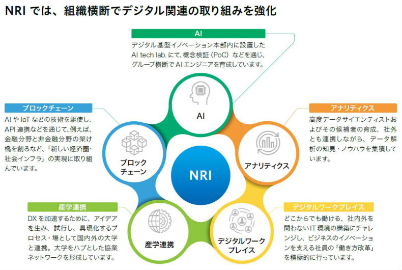
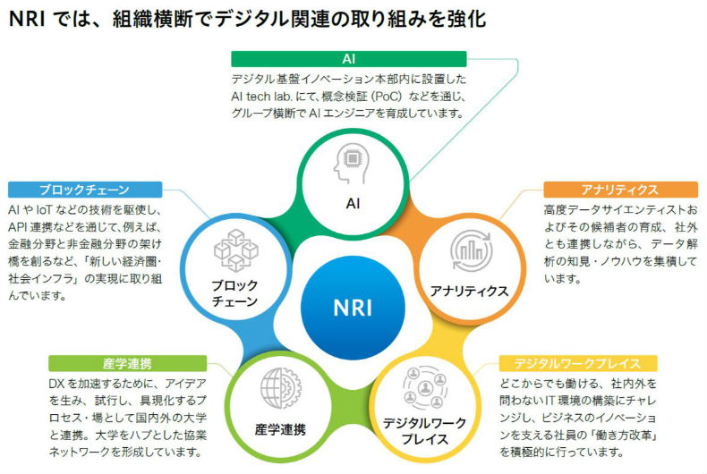

NRIの強み
NRIのデジタルビジネス戦略
NRIのデジタルビジネス戦略
NRIでは、企業のDXに向けた取り組みについて、既存ビジネスの業務プロセス改革に寄与するDXを「DX1.0」、デジタルで新しいビジネスモデルそのものを生み出すDXを「DX2.0」と定義しています。
DXを実現するためには、業務プロセス変革やビジネスモデル創造、そして、それらを実現するITを同時並行で、共に議論しながら、かつ、スピーディーに実装できる戦略パートナーが必要です。NRI は、コンサルティングと IT ソリューションの人材と機能を併せ持ち、お客さまと併走し、お客さまと仮説検証を繰り返しながらビジネスを創出する「コンソリューション」の提供を強みとして、DX の実現を推進します。
_files/businessstrategy.jpg) 
